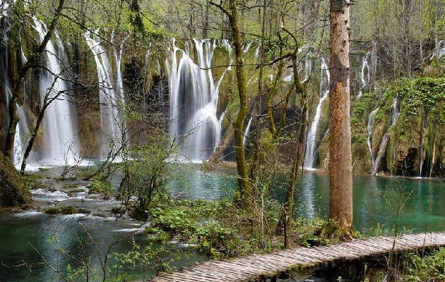
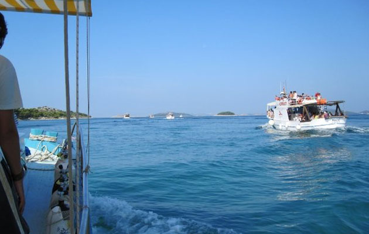

Utflykter från Pula
Plitvice sjöarna
Utnyttja chansen och besök den vackra och speciella nationalparken. Det är en sann upplevelse för livet. Där finns 16 kristallklara sjöar sammanbundna med otaliga skummande vattenfall. Sjöarna är belägna i en vacker dal mellan skogsklädda berg och är med i UNESCO-s världsarvslista. Mer info: www.np-plitvicka-jezera.hr

Venedig i Italien
Vem har inte längtat att besöka någon gång den här fantastiska staden? Om du semestrar någonstans i Istrien har du chans att besöka broarnas och kanalernas stad där det väntar fantastiska upplevelser i form an konst, kultur och arkitektur. Passa på att åka gondol eller ta en promenad över den kända Railtobron, ett minne för livet.
Trieste i Italien
En av Europas klassiska badorter vid Adriatiska havet är samtidigt den stad där flera av den moderna litteraturens verk skrivits. På stadens kaféer skrevs verk som skulle påverka hela världslitteraturen. James Joyce skrev sina första två verk här och påbörjade "Odysseus" medan Sigmund Freud funderade på människans sexualitet.
Postojna & Lipica i Slovenien
Vid gränsen till Kroatien ligger Karstaområdet. Det finns över 6 000 grottor och med 26 miljoner besökare, är Postojna en utav mest besökta grottorna i Europa. Det finns även ett eget litet tåg igenom grottan.
Den slovenska kusten
Slovenien ligger bara en timme bilfärd från Porec, Rovinj eller Pula. Här finns en liten kuststräcka, med intresanta historiska medeltida städer. Staden Portoroz, ligger nära gränsen till Kroatien, men till skillnad från grannens många klippbad har Portoroz en lång sandstrand.
Båtutflykter
Upplev Istrien från sjösidan, nämligen från havet. Man får se klipporna, stränderna, öarna och inte minst njuta av sol och hav. Under seglingen bjuds du på fantastiska naturscenerier och vackra vyer över land. Populära är också de så kallade "Fish picknicks" utflykter, som erbjuds som en heldagstur med olika upplägg.

ALL RIGHTS RESERVED © WWW.PULA.NU 2013